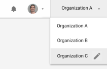

在 Unity 编辑器中构建游戏后，UDP 控制台需要使用每个商店的 SDK 重新打包游戏，然后才能将游戏发布到受支持的商店。 要将构建版本上传到 UDP 控制台，请按照下列步骤操作。 注意：UDP 控制台仅接受采用 UDP 实现方式的 APK。
1.在 UDP 控制台上的我的游戏中选择你的项目。 1.在“游戏信息”选项卡中，找到二进制文件部分。 1.选择上传 APK，然后上传游戏的 APK 文件（和 OBB 文件 - 如果有的话）。
还可以通过以下方式将游戏部署到 UDP 控制台：
在 UDP 控制台上将游戏发布到商店之前，请按照下列步骤操作：
1.编辑游戏信息，包括： 1.检查“沙盒测试”部分，以确保测试成功。 1.上传应用签名私钥 1.指出你的广告使用情况。 1.设置付费价格（如果适用）。 1.将游戏信息本地化为其他语言（如果适用）。 1.完成你的 IAP 商品。 1.发布游戏修订版。
然后，你可以继续发布游戏。
为了能够将游戏发布到商店，你需要发布游戏。 保存修订草案并准备发布时：
1.在“游戏信息”页面中，选择发布。
此时会打开一个窗口以输入发布信息。
1.在发行说明和发布标签字段中输入相应信息以跟踪你的修订版。
1.选择发布。
修订版是指游戏的发行版本。这样就可以始终存储对应用商店提交内容的更改记录。
修订版的关键组成元素包括：
如果更改这些元素之一，那么商店提交内容也会更改，并且你必须创建一个新的修订版。修订系统是增量系统（每次 +1），由 UDP 进行管理。无法创建自定义修订号。发布新修订版时，请使用修订说明和标签来帮助你跟踪修订版。
注意：如果一个修订草案已保存在 UDP 控制台上但未发布，则你将无法从编辑器中推送使修订号增加的更改。
要覆盖现有修订草案，请执行以下操作：
1.选择要编辑的现有修订版。新的草案将继承此修订版的所有游戏信息数据。
1.选择编辑以进行更改。
1.保存你的更改以创建修订草案。
1.要使该草案成为最新修订版，请选择发布。
1.输入发行说明和发布标签以跟踪你的修订版。
修订号在已发布的最高修订版之上递增 1。此修订版将成为最新的修订草案
应使用发布面板将游戏发布到商店。只能将已发布的修订版发布到商店。
对于要将游戏提交到的每个商店，请执行以下步骤：
1.向商店注册。 1.向商店注册游戏。 1.将游戏提交到商店。 1.设置高级设置。 1.添加公司信息。 1.完成所有商店的设置后，选择发布。
如需发布到特定商店的帮助，请参阅 UDP 控制台中的文档 > 合作伙伴商店指南。
发布游戏后，你可以在“报告”控制面板中监控游戏表现。
为了能够将游戏发布到商店，你需要拥有商店的帐户。
要创建商店的帐户，请执行以下操作：
1.在 Publish 页面中，选择“注册到 <商店名称>”。
对于某些商店，可能会将你重定向到 UDP 控制台外部，以便完成商店的注册过程。
1.遵循商店的注册流程。
向商店注册后，你可以在商店中注册游戏。
注意：只有组织所有者 (Organization Owner) 和管理员 (Manager) 可以向商店注册。请参阅与组织相关的权限以了解更多详细信息。
商店帐户是基于每个 Unity 组织 (Unity Organization) 的。通过 UDP 发布的任何游戏都将附加到你执行发布的组织。如果你在其他组织下访问 UDP 控制台，则需要再次注册并创建另一个帐户。有关如何注册到各个商店的更多信息，请参阅 UDP 控制台中的文档 > 合作伙伴商店指南。
向商店注册后，你可以在商店中注册游戏。
1.在“注册”页面中，选择“将你的游戏注册到 <商店名称>”。 1.确认要在商店中注册的包名称，然后选择注册。在注册游戏时，一些商店要求提供其他信息。
在商店中注册游戏后，无法再更改在该商店中的包名称。
如果使用 UDP 生成应用签名私钥，则 UDP 会生成特定于商店的密钥来签名重新打包的构建版本。这可能会影响游戏中集成的部分第三方服务。游戏重新打包后，在高级部分可找到特定于商店的证书。
如果以这种方式为重新打包的构建版本签名，则会使游戏更容易出现 Google Play 保护警告。
在“发布”选项卡中，选择给定商店的目标步骤。
1.如果是首次将游戏发布到商店，请选中该商店的复选框。
1.选择提交到商店。
UDP 会重新打包游戏并将游戏提交到商店。
UDP 为你发布到的每个商店创建一个单独的构建版本，其中仅包含特定于商店的 SDK。 每个特定于商店的构建版本都使用特定于游戏和每个商店的 UDP 证书进行签名。可从每个商店的“高级”部分中查找和检索证书。
此外，如果适用，UDP 将在包名称中添加特定于商店的后缀。如果这是必需的，UDP 控制台将在注册步骤中显示此信息。
注意：如果需要，可以在“发布”页面中配置：
只能将最新发布的修订版提交到商店。如果你打算向不同的商店提交不同的修订版，Unity 会建议你使用发布标签和发行说明来标识你的修订版。
示例：你要为 StoreA 提交一个修订版，并为 StoresBCD 提交另一个修订版。
1.为 StoreA 创建你的修订版（例如，修订版 1）。发布修订版 1 时，请写下清晰的发行说明并为 StoreA 发行版添加标签。 1.将修订版 1 提交到 StoreA。 1.为 StoresBCD 创建新的修订版。该修订草案最终将成为修订版 2。发布修订版 2 时，请写下清晰的发行说明并为 StoresBCD 发行版添加标签。 1.将修订版 2 提交到 StoresBCD。 1.当需要向 StoreA 提交新的发布时，可以基于先前向该商店提交的内容来进行提交。你的发布标签将显示修订版 1 是具有 StoreA 标签的最新修订版。 1.选择修订版 1，然后进行编辑。这将在修订版 1 的基础上创建修订草案。进行发布时，它将成为修订版 3（因为修订版 2 已经发布）。 1.发布修订版 3 时，请继续使用 StoreA 标签。将修订版 3 提交到 StoreA。
如果你以前曾将游戏提交到某个商店，你可以重新打包游戏而无需上传新的 IAP 目录。这时会使用最近提交的 IAP 目录。
1.要重新打包而不上传新的 IAP 目录，请选中该商店的复选框。 1.选择重新打包游戏。
在将重新打包的构建版本提交到商店之前，请从“状态”选项卡下载 APK 并对其进行测试，以确保你的应用内购可以在商店的商业环境中正常工作。
注意：如果你提交新版本的游戏，你在商店的高级设置中所做的更改将被覆盖。
要将游戏发布到 UDP 商店，你需要创建公司信息简介。游戏在应用商店中列出的“关于开发者”(About the developer) 部分会显示此信息。此操作只需执行一次。
1.在 UDP 控制台上，选择你的组织并选择铅笔图标以编辑简介。

1.输入并保存你的公司信息。
完成上述所有步骤后，即可发布游戏。
1.在“发布”选项卡中，选择要将此游戏修订版提交到的每个商店。 1.选择发布。
只有游戏的最新发行版本才会进入为每个商店选择的目标步骤。
如果你的提交有任何问题，这些问题将显示在“细节”部分。
对于仅与 UDP 部分集成的商店，你必须在商店自己的开发者控制台上完成提交。为此，请选择提交的修订版旁边的转到商店。工具提示中会说明仍需要执行哪些步骤。点击链接，然后在商店的控制台上完成提交。
在 UDP 控制台上不再需要某个游戏时，可以将该游戏存档。
要将游戏存档，请执行以下操作：
1.找到我的游戏面板。 1.选择游戏筛选条件。默认情况下，你可以看到所有活动状态的游戏。 1.将鼠标光标悬停在游戏上以显示更多菜单 (⋮)。 1.选择存档。
将游戏存档后，你可以恢复游戏或从 UDP 控制台删除游戏。
要删除 UDP 控制台上不再需要的游戏，请执行以下操作： 1.按步骤将游戏存档。 1.将鼠标光标悬停在游戏上以显示更多菜单 (⋮)。 1.选择删除。
注意：此操作会从 UDP 控制台的“我的游戏”选项卡中永久移除游戏，并从“报告”控制面板中移除游戏的所有数据。
要恢复存档的游戏，请执行以下操作：
1.找到我的游戏面板。 1.选择已存档筛选条件。 1.将鼠标光标悬停在要恢复的游戏上以显示更多菜单 (⋮)。 1.选择恢复。